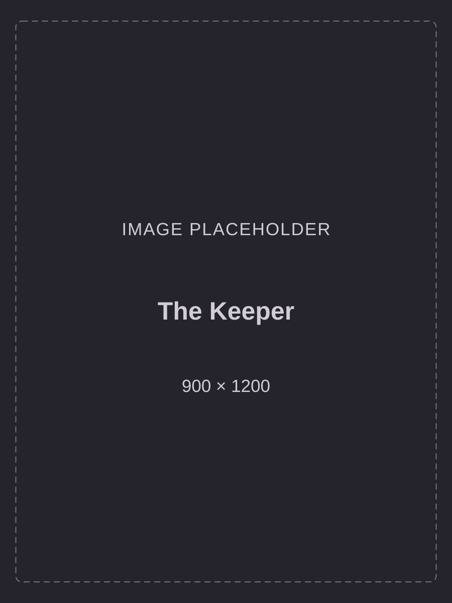

Frame
Capture objective, constraints, budget and success criteria. Ask for clarification when needed.
THE ORDER
A proposed orchestration model that coordinates specialists without replacing human judgment.
Foundation blueprint · Proposed capabilities
Goal, scope, budget, approval
Plan · assign · observe · synthesize
Recall · preserve · refine
RESPONSIBILITY

Defines objectives, constraints and acceptance criteria. Approves consequential actions and owns final decisions.

Decomposes objectives, selects workers, coordinates dependencies, tracks progress and returns consolidated findings.
Execute scoped quests using permitted Runes and Relics, return evidence and surface blockers.
CONTROL FLOW
Capture objective, constraints, budget and success criteria. Ask for clarification when needed.
Break the objective into quests, identify dependencies and select relevant Delvers.
Give each worker a scoped contract, input references and allowed tools.
Track outcomes, retries, errors and budget. Escalate blocked or ambiguous work.
Validate evidence and acceptance criteria; involve independent review when appropriate.
Present results, remaining uncertainty and decisions requiring the Keeper's approval.
COVENANTS
Publishing, payments, production changes and external communication require the appropriate explicit authorization.
Stop on unresolved blockers or exhausted budgets. Surface failed attempts and partial results rather than inventing completion.
Record task states, evidence, handoffs, approvals and relevant tool results in Chronicles.
Keep roles, skills and permissions separate from any particular model. The runtime and enforcement implementation are future work.
This is a proposed operating model, not a claim that orchestration, security enforcement or autonomous execution already exists.